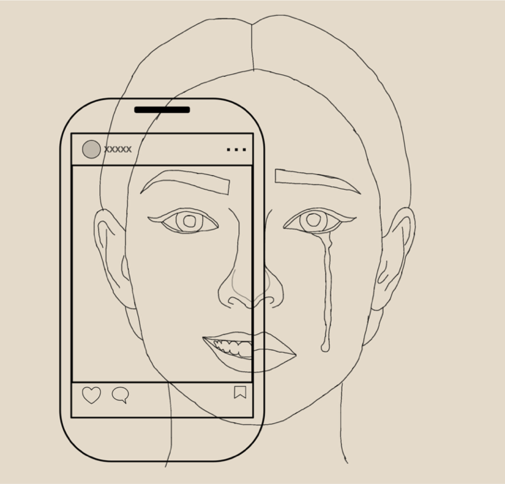

Alleen maar perfectie
In de online wereld zie je heel vaak perfecte plaatjes; zoals mooie slaapkamers, vakanties en perfecte lichamen. Maar dit is vaak niet de werkelijkheid, want wat als iemand een keer een rommelige kamer heeft, of toch geen ‘perfecte’ vakantie heeft?
Ik vind dat er online te veel perfecte plaatjes worden laten zien, ik denk dan ook dat veel mensen die hiernaar kijken onzeker kunnen worden, dit heb ik zelf ook genoeg meegemaakt namelijk. Zo vind ik dus dat social media vaak een vertekend beeld geeft van de realiteit. Hierom is mijn mening dat meer mensen op social media de werkelijkheid moeten laten zien.
Ook de andere kanten delen
Tegenwoordig worden er dus veel perfecte plaatjes laten zien, mensen hebben perfecte outfits, kamers, foto’s, ga zo maar door. Iedereen laat de leuke kanten zien van hun leven en ‘verbergen’ als het ware de mindere kanten, terwijl iedereen die wel heeft. Aan de ene kant is dit natuurlijk hartstikke logisch, want het is nou eenmaal veel leuker om de positieve en leuke dingen te delen. Maar ik denk zelf dat het delen van tegenslagen en soms de negatieve dingen in het leven ook belangrijk is, en dat op social media daar dus de ruimte voor is.
Wat zou ik willen zien?
Wat ik graag meer zou willen zien is bijvoorbeeld onbewerkte foto’s waar mensen geen perfecte huid of perfect lichaam hebben. Ook zou ik graag meer willen horen over de tegenslagen die mensen kunnen hebben, zo loopt niet altijd alles maar perfect en gebeuren er bij iedereen wel is dingen die ze liever niet zouden hebben. Vooral influencers laten het online vaak lijken alsof ze nooit tegenslagen hebben of wat negatiefs meemaken, ik vind dat ook zij mogen delen hoe het is als niet alles gaat hoe ze verwachten of willen.
Zo zeg ik niet dat mensen alles maar moeten delen, maar dat er een betere balans zou moeten komen en het niet altijd maar een perfect plaatje moet zijn. Ik denk dan ook dat het dan een leukere en vrijere plek is voor iedereen!
